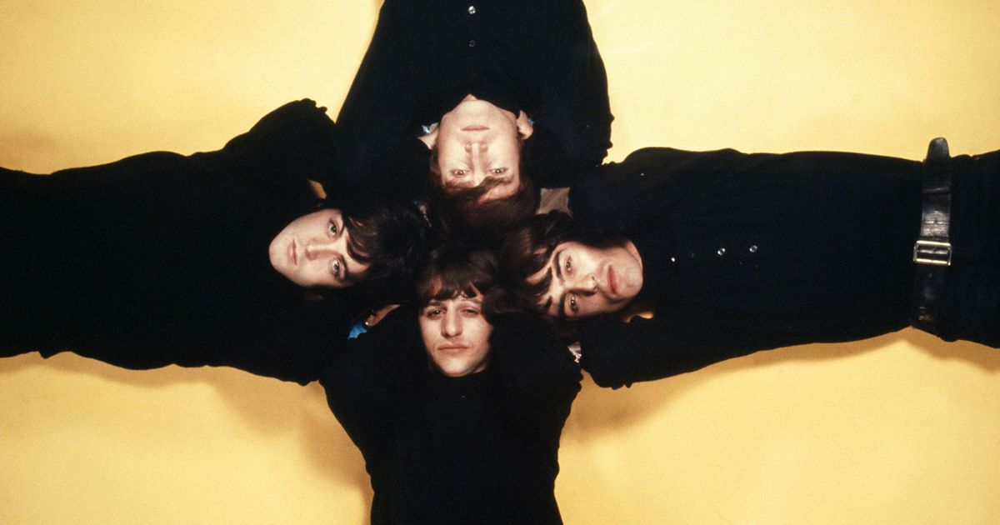
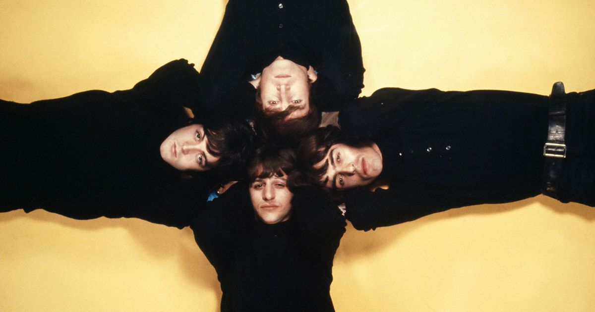

The Band
History
Formed around the nucleus of Lennon and McCartney, who first performed together in Liverpool in 1957, the group grew out of a shared enthusiasm for American rock and roll. Like most early rock-and-roll figures, Lennon, a guitarist and singer, and McCartney, a bassist and singer, were largely self-taught as musicians. Precocious composers, they gathered around themselves a changing cast of accompanists, adding by the end of 1957 Harrison, a lead guitarist, and then, in 1960 for several formative months, Sutcliffe, a promising young painter who brought into the band a brooding sense of bohemian style. After dabbling in skiffle, a jaunty sort of folk music popular in Britain in the late 1950s, and assuming several different names (the Quarrymen, the Silver Beetles, and, finally, the Beatles), the band added a drummer, Best, and joined a small but booming “beat music” scene, first in Liverpool and then, during several long visits between 1960 and 1962, in Hamburg—another seaport full of sailors thirsty for American rock and roll as a backdrop for their whiskey and womanizing.
In autumn 1961 Brian Epstein, a local Liverpool record store manager, saw the band and fell in love. Unshakably convinced of their commercial potential, Epstein became their manager and proceeded to bombard the major British music companies with letters and tape recordings of the band, finally winning a contract with Parlophone, a subsidiary of the giant EMI group of music labels. The man in charge of their career at Parlophone was George Martin, a classically trained musician who from the start put his stamp on the Beatles, first by suggesting the band hire a more polished drummer (they chose Starr) and then by rearranging their second recorded song (and first big British hit), “Please Please Me,” changing it from a slow dirge into an up-tempo romp.
Beatlemania
Beatlemania was something new. Musicians performing in the 19th century certainly excited a frenzy—one thinks of Franz Liszt—but that was before the modern mass media created the possibility of collective frenzy. Later pop music idols, such as Michael Jackson in the mid-1980s and Garth Brooks in the 1990s, sold similarly large numbers of records without provoking anything approaching the hysteria caused by the Beatles. By the summer of 1964, when the Beatles appeared in A Hard Day’s Night, a movie that dramatized the phenomenon of Beatlemania, the band’s effect was evident around the world as countless young people emulated the band members’ characteristic long hair, flip humour, and whimsical displays of devil-may-care abandon. Indeed, their transformative social and cultural influence was even recognized among the upper echelons of political power. In 1965 each of the four Beatles was made a Member of the Order of the British Empire (MBE), having been recommended for the honour by British Prime Minister Harold Wilson (and despite a brief storm of protest by some previous recipients, mainly military veterans, against what they perceived as a lowering of the dignity of the royal order).
Musical style and development
Influences
The band's earliest influences include Elvis Presley, Carl Perkins, Little Richard and Chuck Berry.[372] During the Beatles' co-residency with Little Richard at the Star-Club in Hamburg, from April to May 1962, he advised them on the proper technique for performing his songs.[373] Of Presley, Lennon said, "Nothing really affected me until I heard Elvis. If there hadn't been Elvis, there would not have been the Beatles."[374] Other early influences include Buddy Holly, Eddie Cochran, Roy Orbison[375] and the Everly Brothers.
The Beatles continued to absorb influences long after their initial success, often finding new musical and lyrical avenues by listening to their contemporaries, including Bob Dylan, the Who, Frank Zappa, the Lovin' Spoonful, the Byrds and the Beach Boys, whose 1966 album Pet Sounds amazed and inspired McCartney.[377][378][379][380] Referring to the Beach Boys' creative leader, Martin later stated: "No one made a greater impact on the Beatles than Brian [Wilson]."[381] Ravi Shankar, with whom Harrison studied for six weeks in India in late 1966, had a significant effect on his musical development during the band's later years.[382]
Genre
Originating as a skiffle group, the Beatles quickly embraced 1950s rock and roll and helped pioneer the Merseybeat genre,[383] and their repertoire ultimately expanded to include a broad variety of pop music.[384] Reflecting the range of styles they explored, Lennon said of Beatles for Sale, "You could call our new one a Beatles country-and-western LP",[385] while Gould credits Rubber Soul as "the instrument by which legions of folk-music enthusiasts were coaxed into the camp of pop"
The band's stylistic range expanded in another direction with their 1966 B-side "Rain", described by Martin Strong as "the first overtly psychedelic Beatles record".[389] Other psychedelic numbers followed, such as "Tomorrow Never Knows" (recorded before "Rain"), "Strawberry Fields Forever", "Lucy in the Sky with Diamonds" and "I Am the Walrus". The influence of Indian classical music was evident in Harrison's "The Inner Light", "Love You To" and "Within You Without You" – Gould describes the latter two as attempts "to replicate the raga form in miniature".
After the break-up
In 1966 the Beatles retired from public performing to concentrate on exploiting the full resources of the recording studio. A year later, in June 1967, this period of widely watched creative renewal was climaxed by the release of Sgt. Pepper’s Lonely Hearts Club Band, an album avidly greeted by young people around the world as indisputable evidence not only of the band’s genius but also of the era’s utopian promise. More than a band of musicians, the Beatles had come to personify, certainly in the minds of millions of young listeners, the joys of a new counterculture of hedonism and uninhibited experimentation—with music and with new ways of life. (Various members of the band in these years flirted with mind-expanding drugs such as LSD and also with exotic spiritual exercises such as transcendental meditation, a technique taught to them by Maharishi Mahesh Yogi, a barnstorming guru from India.)
Music
Here is a list of the top Albums and some of the Top Songs from these Albums
ABBEY ROAD
- Come Together
- Something
- Here Comes the Su
- Maxwell's Silver Hammer
- Octopus's Garden
LET IT BE
- Two Of Us
- Let It Be
- Get Back
- Across The Universe
- I've Got A Feeling
REVOLVER
- Eleanor Rigby
- Yellow Submarine
- Here, There And Everywhere
- And Your Bird Can Sing
- I’m Only Sleeping
SGT PEPPER'S LONELY HEARTS CLUB BAND
- Lucy In The Sky With Diamonds
- When I’m Sixty-Four
- With A Little Help From My Friends
- Sgt Pepper’s Lonely Hearts Club Band (Reprise)
- Lovely Rita
Records Released-Cover Art


 
